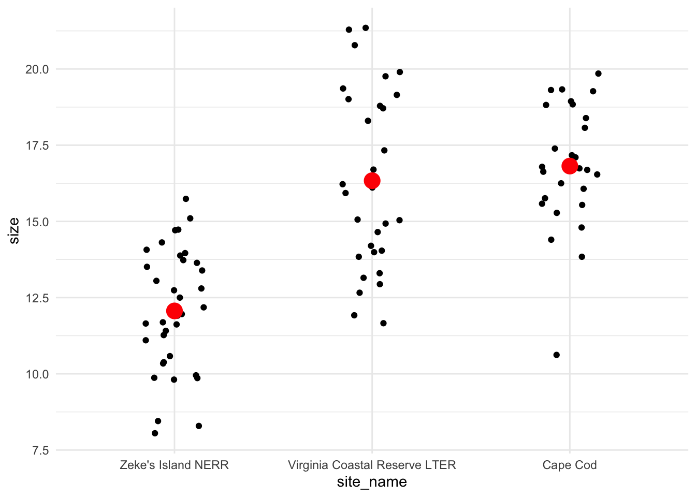
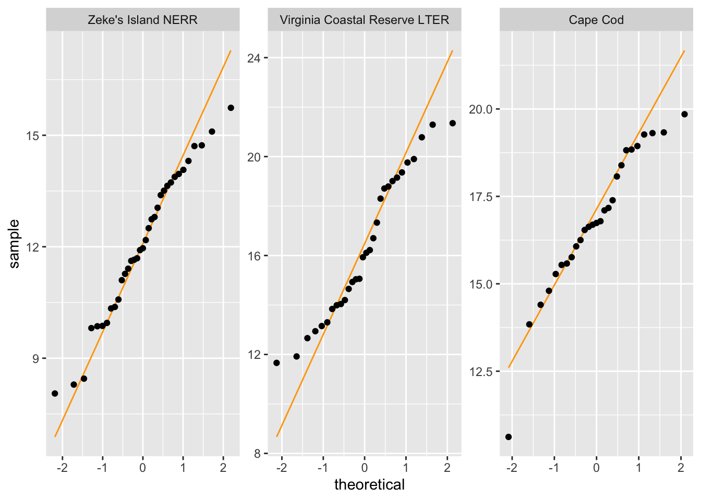
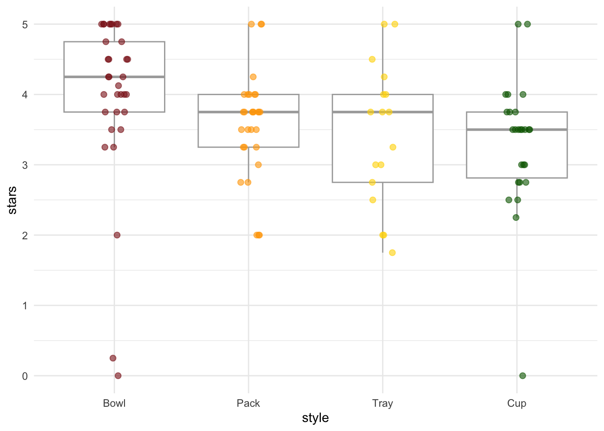

library(tidyverse)
library(lterdatasampler)
library(rstatix)
library(car)
# for parametric tests
data(pie_crab)
# for non-parametric tests
ramen_ratings <- read_csv("ramen_ratings.csv")Workshop dates: May 1 (Thursday), May 2 (Friday)
1. Summary
Packages
tidyverse
lterdatasampler
rstatix
car
Operations
New functions
- make sure a variable is a factor using
as_factor() - do a Shapiro-Wilk test using
shapiro.test()
- do a Levene’s test using
car::leveneTest()
- do an ANOVA using
aov()
- look for more information from model results using
summary()
- do post-hoc Tukey test using
TukeyHSD()
- calculate effect size for ANOVA using
rstatix::eta_squared()
- do Kruskal-Wallis test using
kruskal.test()
- do Dunn’s test using
rstatix::dunn_test()
- calculate effect size for Kruskal-Wallis test using
rstatix::kruskal_effsize()
Review
- read in data using
read_csv()
- chain functions together using
|>
- modify columns using
mutate()
- select columns using
select()
- rename columns using
rename()
- visualize data using
ggplot()
- create histograms using
geom_histogram()
- visualize QQ plots using
geom_qq()andgeom_qq_line()
- create multi-panel plots using
facet_wrap()
- group data using
group_by()
- summarize data using
summarize()
Data sources
The Plum Island Ecosystem fiddler crab data is from lterdatasampler (data info here). The ramen ratings data set is a Tidy Tuesday dataset - see more about the data and its source here.
2. Code
1. Packages
2. Parametric tests
a. Cleaning and wrangling
- Create a new object called
pie_crab_clean. - Filter to only include the following sites: Cape Cod, Virginia Coastal Reserve LTER, and Zeke’s Island NERR.
- Make sure
siteis a factor. - Select the columns of interest:
site,name, andcode. - Rename the column
nametosite_nameandcodetosite_code.
pie_crab_clean <- pie_crab |> # start with the pie_crab dataset
filter(site %in% c("CC", "ZI", "VCR")) |> # filter for Cape Cod, Zeke's Island, Virginia Coastal
mutate(name = as_factor(name)) |> # make sure site name is being read in as a factor
select(site, name, size) |> # select columns of interest
rename(site_code = site, # rename site to be site_code
site_name = name) # rename name to be site_name
# display some rows from the data frame
# useful for showing a small part of the data frame
slice_sample(pie_crab_clean, # data frame
n = 10) # number of rows to show# A tibble: 10 × 3
site_code site_name size
<chr> <fct> <dbl>
1 CC Cape Cod 19.3
2 ZI Zeke's Island NERR 8.45
3 ZI Zeke's Island NERR 12.7
4 ZI Zeke's Island NERR 9.87
5 ZI Zeke's Island NERR 14.7
6 CC Cape Cod 17.2
7 CC Cape Cod 14.4
8 ZI Zeke's Island NERR 11.6
9 VCR Virginia Coastal Reserve LTER 15.9
10 CC Cape Cod 13.8 b. Quick summary
- Create a new object called
pie_crab_summary. - Calculate the mean, variance, and sample size. Display the object.
# creating a new object called pie_crab_summary
pie_crab_summary <- pie_crab_clean |> # starting with clean data frame
group_by(site_name) |> # group by site
summarize(mean = mean(size), # calculate mean size
var = var(size), # calculate variance of size
n = length(size)) # calculate number of observations per site (sample size)
# display pie_crab_summary
pie_crab_summary# A tibble: 3 × 4
site_name mean var n
<fct> <dbl> <dbl> <int>
1 Zeke's Island NERR 12.1 4.04 35
2 Virginia Coastal Reserve LTER 16.3 8.63 30
3 Cape Cod 16.8 4.22 27c. Exploring the data
Create a jitter plot with the mean crab size for each site.
# base layer: ggplot
ggplot(pie_crab_clean, # use the clean data set
aes(x = site_name, # x-axis
y = size)) + # y-axis
# first layer: jitter (each point is an individual crab)
geom_jitter(height = 0, # don't jitter points vertically
width = 0.15) + # narrower jitter (easier to see)
# second layer: point representing mean
stat_summary(geom = "point", # geometry being plotted
fun = mean, # function (calculating the mean)
color = "red", # color to make it easier to see
size = 5) + # larger point size
theme_minimal() # cleaner plot theme
Is there a difference in mean crab size between the three sites?
Yes, and Zeke’s Island NERR crabs tend to be smaller than those from Cape Cod or Virginia Coastal Reserve LTER.
d. Check 1: normally distributed variable
- Create a histogram of crab size.
- Facet your histogram so that you have 3 panels, with one panel for each site.
# base layer: ggplot
ggplot(data = pie_crab_clean,
aes(x = size)) + # x-axis
# first layer: histogram
geom_histogram(bins = 9) + # number of bins from Rice Rule
# faceting by site_name: creating 3 different panels
facet_wrap(~ site_name) - Create a QQ plot of crab size.
- Facet your QQ plot so that you have 3 panels, with one panel for each site.
# base layer: ggplot
ggplot(data = pie_crab_clean,
aes(sample = size)) + # y-axis
# first layer: QQ plot reference line
geom_qq_line(color = "orange") +
# second layer: QQ plot points (actual observations)
geom_qq() +
# faceting by site_name
facet_wrap(~ site_name,
scales = "free") # let axes vary between panels
What are the outcomes of your visual checks?
Not perfect (crab sizes from VCR LTER seem not normally distributed) but with large sample sizes for each group, this might not matter too much.
Do Shapiro-Wilk tests:
cc_crabs <- pie_crab_clean |> # use the original data set
filter(site_code == "CC") |> # filter to only include Cape Cod
pull(size) # extract the size column as a vector
vcr_crabs <- pie_crab_clean |>
filter(site_code == "VCR") |> # filter to only include Virginia Coastal
pull(size)
zi_crabs <- pie_crab_clean |>
filter(site_code == "ZI") |> # filter to only include Zeke's Island
pull(size)
# do the Shapiro-Wilk tests
shapiro.test(cc_crabs)
Shapiro-Wilk normality test
data: cc_crabs
W = 0.93547, p-value = 0.09418shapiro.test(vcr_crabs)
Shapiro-Wilk normality test
data: vcr_crabs
W = 0.94447, p-value = 0.12shapiro.test(zi_crabs)
Shapiro-Wilk normality test
data: zi_crabs
W = 0.97446, p-value = 0.5766What are the outcomes of your statistical checks?
With Shapiro-Wilk normality tests, there seems to be no deviation from normality for Cape Cod crab sizes (W = 0.9, p = 0.09), VCR LTER crab sizes (W = 0.9, p = 0.12), or Zeke’s Island crab sizes (W = 1, p = 0.6).
e. Check 2: equal variances
Do a gut check: is the largest variance less than 4× the smallest variance?
4.04*4 > 8.63[1] TRUEUsing leveneTest() from car
# do the Levene test
leveneTest(
size ~ site_name, # formula: crab size as a function of site
data = pie_crab_clean # data frame
)Levene's Test for Homogeneity of Variance (center = median)
Df F value Pr(>F)
group 2 5.0233 0.00857 **
89
---
Signif. codes: 0 '***' 0.001 '**' 0.01 '*' 0.05 '.' 0.1 ' ' 1What are the outcomes of your variance check?
There’s a deviation from homogeneity of variance (in other words, the variances are not equal), but since the largest variance is less than 4 times the smallest variance (and the sample sizes are large), this may still be ok.
f. ANOVA
# creating an object called crab_anova
crab_anova <- aov(size ~ site_name, # formula
data = pie_crab_clean) # data
# gives more information
summary(crab_anova) Df Sum Sq Mean Sq F value Pr(>F)
site_name 2 442.2 221.10 39.56 5.1e-13 ***
Residuals 89 497.4 5.59
---
Signif. codes: 0 '***' 0.001 '**' 0.01 '*' 0.05 '.' 0.1 ' ' 1Summarize results: is there a difference in crab size between the three sites?
There is a difference in crab size between Cape Cod, Virginia Coastal Reserve LTER, and Zeke’s Island NERR (one-way ANOVA, F(2, 89) = 39.6, p < 0.001, \(\alpha\) = 0.05).
g. Post-hoc: Tukey HSD
TukeyHSD(crab_anova) Tukey multiple comparisons of means
95% family-wise confidence level
Fit: aov(formula = size ~ site_name, data = pie_crab_clean)
$site_name
diff lwr upr
Virginia Coastal Reserve LTER-Zeke's Island NERR 4.2719524 2.869912 5.673993
Cape Cod-Zeke's Island NERR 4.7514709 3.308099 6.194843
Cape Cod-Virginia Coastal Reserve LTER 0.4795185 -1.015317 1.974354
p adj
Virginia Coastal Reserve LTER-Zeke's Island NERR 0.0000000
Cape Cod-Zeke's Island NERR 0.0000000
Cape Cod-Virginia Coastal Reserve LTER 0.7255994Which pairwise comparisons are actually different? Which ones are not different?
Zeke’s Island NERR and Cape Cod crabs are different, and Zeke’s Island NERR and Virginia Coastal Reserve LTER crabs are different. Virginial Coastal Reserve LTER and Cape Cod crabs are not different.
h. effect size
Using eta_squared() from rstatix
eta_squared(crab_anova)site_name
0.4706113 What is the magnitude of the differences between sites in crab size?
There is a large difference in crab size between sites.
i. Putting everything together
We found a large (\(\eta^2\) = 0.47) difference between sites in mean crab size (one-way ANOVA, F(2, 89) = 39.6, p < 0.001, \(\alpha\) = 0.05). The smallest crabs were from Zeke’s Island NERR, which were on average 12.1 mm. Zeke’s Island crabs were 4.8 mm (95% CI: [3.3, 6.2] mm) smaller than crabs from Cape Cod (Tukey’s HSD: p < 0.001) and 4.3 mm (95% CI: [2.9, 5.7] mm) smaller than crabs from Virginia Coastal Reserve LTER (Tukey’s HSD: p < 0.001).
3. Non-parametric tests
a. Clean and wrangle the data
ramen_ratings_clean <- ramen_ratings |> # use the ramen_ratings dataframe
filter(brand == "Maruchan") |> # filter to only include Maruchan ramen
mutate(style = fct_relevel(style, "Bowl", "Pack", "Tray", "Cup")) # reorder style factor
# look at the structure
str(ramen_ratings_clean)tibble [106 × 6] (S3: tbl_df/tbl/data.frame)
$ review_number: num [1:106] 3176 3152 3141 3124 3111 ...
$ brand : chr [1:106] "Maruchan" "Maruchan" "Maruchan" "Maruchan" ...
$ variety : chr [1:106] "Gotsumori Shio Yakisoba" "QTTA Curry Ramen" "Thai Red Curry Udon" "Kitsune Udon 40th Anniversary" ...
$ style : Factor w/ 4 levels "Bowl","Pack",..: 3 4 1 1 1 4 1 1 4 3 ...
$ country : chr [1:106] "Japan" "Japan" "Japan" "Japan" ...
$ stars : num [1:106] 5 5 5 4.5 4 4 3.75 2 2.5 2.5 ...b. Quick summary
# create a new object called ramen_ratings_summary
ramen_ratings_summary <- ramen_ratings_clean |> # start with the cleaned data frame
# group by stle
group_by(style) |>
# calculate the median
summarize(median = median(stars))
# display the object
ramen_ratings_summary # A tibble: 4 × 2
style median
<fct> <dbl>
1 Bowl 4.25
2 Pack 3.75
3 Tray 3.75
4 Cup 3.5 c. Make a boxplot to compare star ratings across ramen styles
# base layer: ggplot
ggplot(data = ramen_ratings_clean,
aes(x = style, # x-axis
y = stars, # y-axis
color = style)) + # fill geoms by ramen style
# first layer: boxplot
geom_boxplot(color = "darkgrey",
outliers = FALSE) + # taking out outliers because they will be shown in the jitter
# second layer: jitter
geom_jitter(height = 0,
width = 0.1,
size = 2,
alpha = 0.6) +
# set custom colors
scale_color_manual(values = c("firebrick4", "orange", "gold", "darkgreen")) +
# minimal theme
theme_minimal() +
# take out the legend
theme(legend.position = "none") 
d. Do the Kruskal-Wallis test
kruskal.test(
stars ~ style, # formula: star ratings as a function of ramen style
data = ramen_ratings_clean # data frame
)
Kruskal-Wallis rank sum test
data: stars by style
Kruskal-Wallis chi-squared = 15.679, df = 3, p-value = 0.00132Is there a difference in ratings between ramen styles?
Ramen styles differ in ratings (Kruskal-Wallis rank sum test, \(\chi^2\)(3) = 15.7, p = 0.0013).
e. Do a Dunn’s post-hoc test
Using dunn_test() from rstatix
dunn_test(
stars ~ style, # formula: star ratings as a function of ramen style
data = ramen_ratings_clean # data frame
)# A tibble: 6 × 9
.y. group1 group2 n1 n2 statistic p p.adj p.adj.signif
* <chr> <chr> <chr> <int> <int> <dbl> <dbl> <dbl> <chr>
1 stars Bowl Pack 33 30 -2.61 0.00898 0.0449 *
2 stars Bowl Tray 33 17 -2.54 0.0112 0.0449 *
3 stars Bowl Cup 33 26 -3.70 0.000213 0.00128 **
4 stars Pack Tray 30 17 -0.323 0.747 0.985 ns
5 stars Pack Cup 30 26 -1.16 0.244 0.733 ns
6 stars Tray Cup 17 26 -0.686 0.492 0.985 ns Which pairwise comparisons of ramen styles are different from each other?
Bowls and packs are different, bowls and trays are different, bowls and cups are different.
f. Calculate an effect size
Using kruskal_effsize() from rstatix
kruskal_effsize(
stars ~ style, # formula: star ratings as a function of ramen style
data = ramen_ratings_clean # data frame
)# A tibble: 1 × 5
.y. n effsize method magnitude
* <chr> <int> <dbl> <chr> <ord>
1 stars 106 0.124 eta2[H] moderate What is the magnitude of the effect of ramen style on ratings?
There is a moderate (\(\eta^2\) = 0.12) effect of ramen style on ratings.
g. Putting everything together
We found a moderate (\(\eta^2\) = 0.12) difference in ratings between ramen styles (Kruskal-Wallis rank sum test, \(\chi^2\)(3) = 15.7, p = 0.0013). Bowl-style ramen had a median rating of 4.25 stars, which tended to be more highly rated than pack (Dunn’s post-hoc test: Holm adjusted p = 0.04, median rating = 3.75 stars), tray (Dunn’s post-hoc test: Holm adjusted p = 0.04, median rating = 3.75 stars), or cup style ramen (Dunn’s post-hoc test: Holm adjusted p = 0.0013, median rating = 3.5 stars).